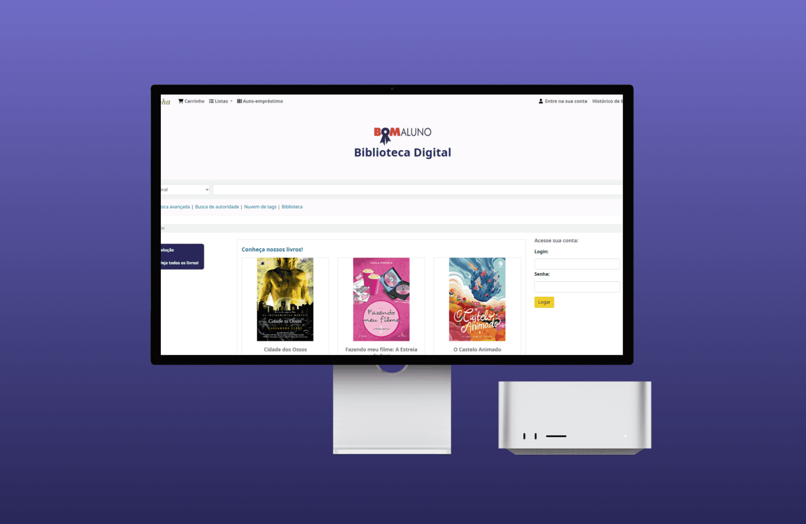
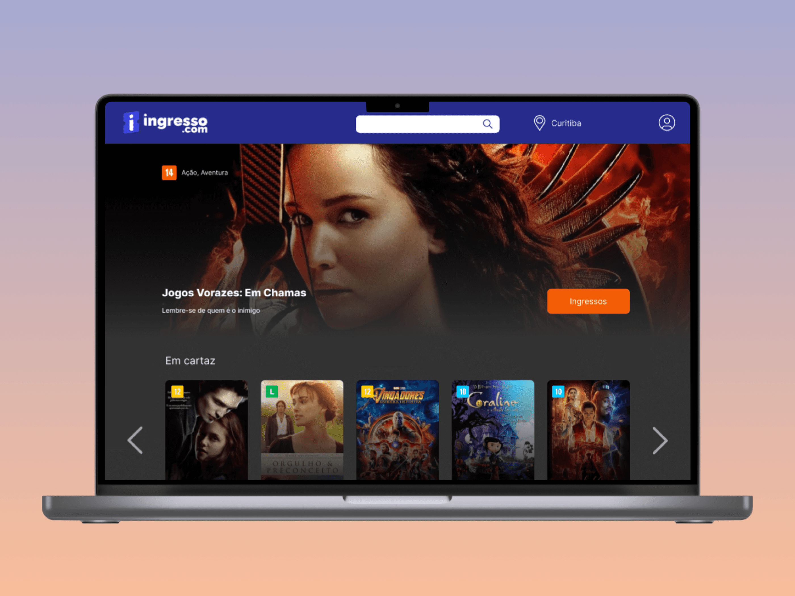

Voltar para projetos
UX/UI Design para
Instituto Bom Aluno
Experiência institucional para comunicar impacto social, programas e caminhos de apoio.

Desafio
Apresentar uma causa com clareza e confiança.
O projeto organiza conteúdo institucional para diferentes públicos: estudantes, famílias, apoiadores e parceiros.
Processo
Arquitetura de informação e narrativa visual.
A solução prioriza impacto, acessibilidade, chamadas claras e seções fáceis de navegar.


Resultado
Uma base mais clara para informar e engajar.
A interface ajuda a explicar o propósito da instituição e facilita o acesso às principais ações.